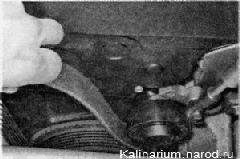
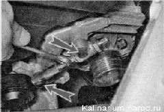
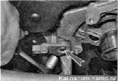
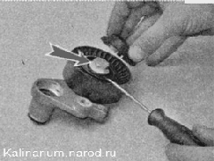
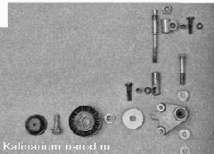

Замена ремня генератора и натяжного роликаПоследовательность выполнения 1. Ослабляем натяжение ремня привода генератора. 2. Снимаем ремень со шкива генератора и со шкива коленчатого вала. 3. Вращая натяжной ролик, проверяем его состояние. При замене ремня привода генератора следует проверить состояние натяжного ролика. Он должен легко вращаться, без заедания и шума. Неисправный ролик следует заменить. При необходимости заменить ролик можно, не снимая натяжной механизм с двигателя (см. ниже) 4. При необходимости разборки натяжного механизма, накидным ключом на 13 мм отворачиваем два болта крепления регулировочной шпильки и снимаем ее в сборе с верхним кронштейном и резьбовым наконечником. 
5. Торцовым ключом на 13 мм отворачиваем болт нижнего крепления натяжного устройства и снимаем его в сборе с натяжным роликом. 6. Поддев отверткой, снимаем защитную крышку с ролика. Торцовым ключом на 17 мм отворачиваем болт крепления ролика (показано стрелкой). 7. Разбираем детали натяжного механизма, обрабатываем места, поврежденные коррозией, проникающей смазкой с преобразователем ржавчины. Смазываем резьбовую часть регулировочной шпильки любой пластичной смазкой. Неисправные детали заменяем. Установка 1. Устанавливаем ролик, собираем и устанавливаем натяжной механизм в обратной последовательности. 2. Сначала надеваем ремень на шкив коленчатого вала и затем на шкив генератора. 3. Регулируем натяжение ремня. |